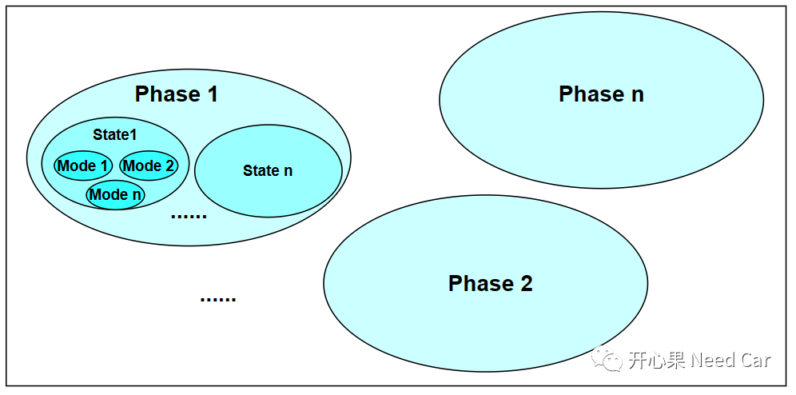
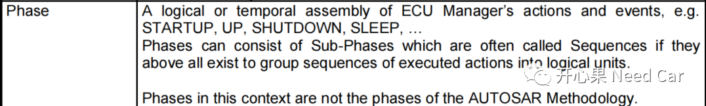
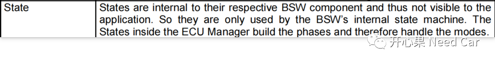
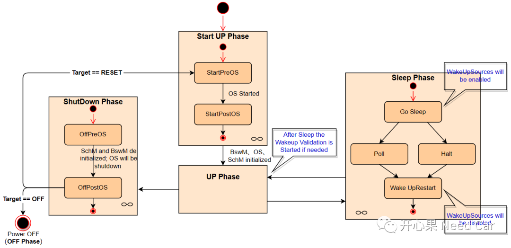
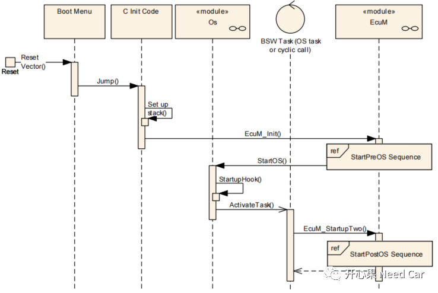
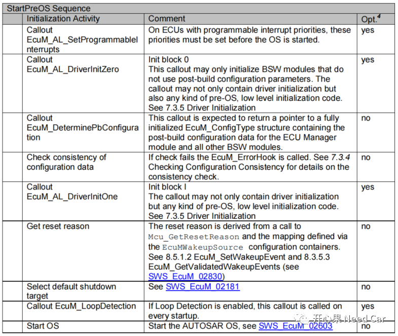
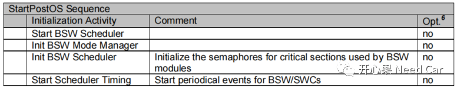
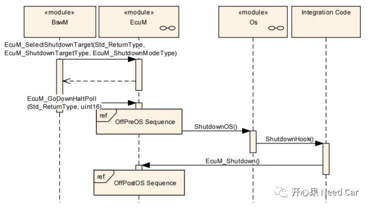
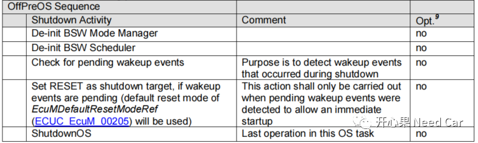
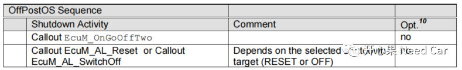

实际的工程项目中，ECU启动、关闭流程出现的问题不少，而且影响比较严重。比如：ECU无法唤醒、ECU无法休眠......所以，如果想解决问题，了解ECU的启动、关闭流程是一个必修课。ECU的启动、关闭流程，涉及的模块比较多，对开发者的要求比较高，本人水平有限，无法详尽的展开所有细节，本文将自己有限的理解，结合Autosar的EcuM（ECU State Management）模块，聊一聊EcuM如何管控ECU启动、关闭流程。本文聚焦问题：
提示：在Autosar 4.4.0版本之前，EcuM分为Fixed Version和Flexiable Version。或许是因为Flexible可以兼容Fixed的缘故，从Autosar 4.4.0版本开始，去除了Fixed Version。在实际的工程项目中，我几乎没有见过使用Fixed版本的模式。（一）EcuM的模式划分
在Autosar规范中，EcuM根据状态执行的时间划分States、Modes和Phases三个层级。如何理解三者之间的关系？个人理解：Phases中包含States，States中处理Mode，如下所示：
Autosar是如何解释的呢？
Phase：包含Sub-Phases，也叫Sequences。具体解释如下：

State：属于BSW组件的内部状态，对Application不可见。具体解释如下：
其中，ECU的Phase包含STARTUP、SHUTDOWN、UP、OFF和SLEEP，如下所示：

提示：阅读UML关系图时，∞表示此状态下有子状态机。
- STARTUP：主要初始化一些基础软件模块（basic software modules）
- SHUTDOWN：根据Target的选择方式（OFF、RESET），执行不同的下电流程
- UP：当BSW Scheduler完成启动，且BswM完成初始化以后，进入EcuM的UP阶段。Autosar中解释，此阶段，内存、通信栈、RTE等还没有开始初始化。这些模块的初始化一般放在BswM处理，即：开发者设计对应的Rule，由BswM仲裁，进而决定程序的启动。因此，此处的设计，给了开发者很大的自由度，相应的，也承担着更大的责任。此阶段，内存的初始化，需要调用NVM_ReadAll()接口，NVM一般采用异步读取，所用时间与项目之初设计的NVM大小有关。完成内存的初始化以后，COM、DEM、FIM等模块的参数获取了对应的值（初始值或者NVM中存储的值），方可初始化。当通信栈获取了目标参数以后，启动RTE。
- SLEEP：此阶段可以节能，包含Poll和Halt两个子状态。Poll子状态下，CPU的clock极大降低，代码低速的检测唤醒事件；Halt状态下，CPU时钟停止，代码不再运行，相比Poll子状态更节省能量。但是，不管怎样，此阶段还是消耗一定的能量，没有ECU断电节能。此阶段的出现，可以看作消耗部分能量换启动时间。工程中，这种模式鲜少使用。如果启动时间满足不了需求，在满足静态电流需求的情况下，可以尝试一下。
StartUp流程如下所示：

（1）当uC供电以后，程序从复位向量入口开始执行（Reset Vector），具体的起始地址可以在链接文件中（eg：*.lsl）查看，提示：此地址属于自定义的用户地址，一般是Boot程序地址；
（2）程序在Boot中，会判断App的有效性，如果App有效，程序跳转到App的Main函数处（上图中的C init Code）;
（3）在App的main函数中，会调用EcuM_Init()接口，EcuM开始接管ECU的StartUp流程，在StartPreOS的时序中，调用StartOS()接口，Os从EcuM临时拿过程序的控制权，之后，Os通过ActivateTask()激活任务。在BswM Task中，通过EcuM_StartupTwo()接口将程序的控制权再交还给EcuM，之后，进一步地执行StartPost Os时序。
提示：在程序进入App的main函数之前，程序已经完成堆/栈、PC指针寄存器、中断、Trap等初始化动作。在StartPreOS时序中，有多个Callout，有些必须实现，有些非必须实现，如下所示：

在StartPreOS阶段，二类中断不可用，如果使用中断，只能使用一类中断。在init block 0阶段，一般会初始化DET（Default Error Tracer）等模块。在init block 1阶段，一般会初始化Port、MCU、GPT、WDG、ICU等外设模块。提示：关于ECU的复位原因，在Autosar中已经给出了标准接口Mcu_GetResetReason()，如果开发中，开发者Mapping了唤醒源，在程序的初始化过程中即可获取程序的复位原因。
此阶段，会完成BswM模块的初始化，控制权转交给BswM模块。

在BswM中，通过EcuM_SelectShutdownTarget()接口选择Shutdown的Target（RESET \ OFF），默认为RESET。
BswM周期性检测配置Rule，如果所有的唤醒事件处于NONE（没有有效唤醒事件）和EXPIRED（校验超时）状态，BswM将调用EcuM_GoDownHaltPoll()接口，执行OffPreOS流程：
如上的时序可以看出，在Shutdown阶段，EcuM依然有检测唤醒事件的能力，如果检测到Pending的唤醒事件，可执行RESET流程，而不必走OFF流程。但是，实际工程中，很多项目都选择了OFF的做法。
此阶段，意味着程序执行近乎尾声，EcuM_Shutdown()接口接下来要执行的动作如下：

具体执行EcuM_AL_Reset(EcuM_ResetType)还是EcuM_AL_SwitchOff()取决于Target的选择。
提示：具体到项目，可能并没有在Os中使用ShutdownHook()，进而EcuM_Shutdown()接口并不能被执行。点击下方关注，一起聊聊Autosar/嵌入式，如果需要，联系作者进群，给你更专业的解答